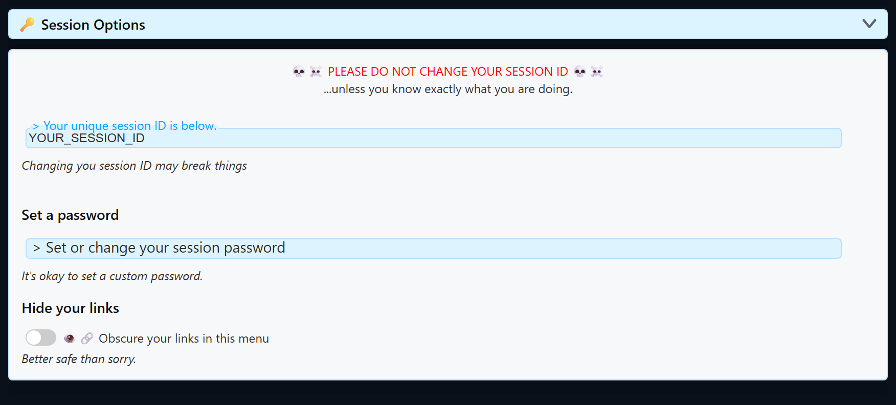
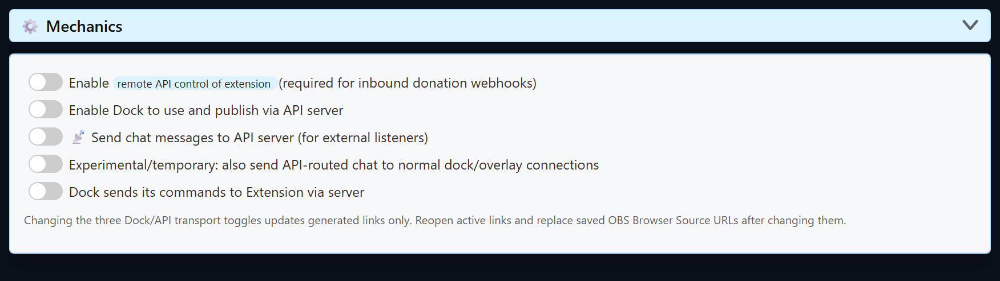

Модель підключення
- Джерело захоплює чат або подію й публікує їх у сесію Social Stream.
- Док, оверлей Featured, Multi Alerts, Event Flow та інші сторінки приєднуються до тієї самої сесії.
- Якщо пароль встановлено, кожна сторінка, що приєднується, повинна використовувати той самий пароль.
- Якщо серверну маршрутизацію ввімкнено, активні сторінки повинні використовувати нові згенеровані URL з відповідними параметрами маршрутизації.
Source → same session ID + password + routing mode → Dock / overlay / API consumerID сесії та пароль
Відкрити Global settings and tools → Session Options , щоб переглянути поточний ID сесії та встановити необов’язковий пароль.

| Значення | Правило |
|---|---|
| ID сесії | Залишайте його незмінним, якщо не плануєте замінити всі URL джерел, доків, оверлеїв та інтеграцій, які його використовують. |
| Пароль | Необов’язковий, але після встановлення має збігатися всюди. Копіюйте нові згенеровані посилання після його додавання або зміни. |
| Згенероване посилання | Вважайте все посилання приватним, якщо воно містить пароль або інші конфіденційні параметри. |
Віддавайте перевагу копіюванню згенерованих URL. Вони вже містять поточну сесію, пароль, версію сторінки й підтримувані параметри маршрутизації. Вручну відредаговані посилання часто спричиняють порожні сторінки.
Увімкнення резервного сервера для читання й відповідей
Використовуйте це, коли док або об’єднаний чат підключається, але повідомлення не надходять, або коли відповіді не працюють через блокування чи ненадійність звичайного однорангового шляху.
Два резервні елементи керування працюють парою: Надсилати повідомлення чату на сервер API (для зовнішніх слухачів) передає вхідний чат серверним шляхом, тоді як Dock sends its commands to Extension via server повертає відповіді й команди дока.
Швидкий спосіб
- Відкрийте або перезавантажте згенероване посилання дока.
- Надішліть вигадане тестове повідомлення із Social Stream Ninja.
- Якщо Увімкнення резервного сервера з’явиться сповіщення, виберіть його й підтвердьте. Social Stream Ninja разом умикає серверні шляхи вхідного чату та команд відповідей.
- Скопіюйте щойно згенеровані посилання дока й оверлеїв. Повторно відкрийте звичайні вікна браузера та замініть усі збережені URL браузерних джерел OBS.
Ручний спосіб у настільному застосунку
- Відкрийте настільний застосунок Social Stream. У правій «Джерела й налаштування» панелі розгорніть Загальні налаштування та інструменти.
- Розгорніть Механіка — підключення та інтеграції.
- Увімкніть Надсилати повідомлення чату на сервер API (для зовнішніх слухачів). Це шлях вхідного чату/читання.
- Увімкніть Dock sends its commands to Extension via server. Це шлях відповідей/керування.
- Скопіюйте й повторно відкрийте щойно згенеровані посилання. Старі відкриті сторінки й збережені URL OBS не оновлюються самостійно.

Не вмикайте всі серверні параметри. Увімкнути дистанційне керування API, Enable Dock to use and publish via API serverта тимчасовий параметр додаткової доставки не потрібні для звичайного резервного читання й відповідей. Додаткова доставка може дублювати повідомлення.
Стандартний режим, пересилання та режими сервера API
| Керування | Що змінює | Коли це використовувати |
|---|---|---|
| Стандартні посилання | Звичайний транспорт peer/session Social Stream без доданого прапорця сервера. | Більшість налаштувань на одному комп’ютері та звичайних конфігурацій OBS. |
| Увімкнути дистанційне керування розширенням через API | Умикає керування розширенням через HTTP/WebSocket і обробку вхідних вебхуків. | Зовнішні застосунки, керування Stream Deck/API або підтримувані вхідні вебхуки донатів. |
| Enable Dock to use and publish via API server | Додає параметр сторінки server маршрутизацію, де вона підтримується. |
Процесу Dock/Featured потрібне дистанційне керування через сервер API замість звичайного шляху. |
| Send chat messages to API server | Спрямовує захоплений чат на шлях слухача сервера API та додає server2 до підтримуваних згенерованих посилань. |
Доку потрібен резервний сервер для вхідного чату, або Python, Node чи інший зовнішній слухач WebSocket має отримувати чат. |
| Також надсилати чат маршруту API звичайним способом | Тимчасова додаткова доставка обома шляхами. | Лише під час навмисного переходу зі змішаними режимами; може дублювати повідомлення. |
| Команди дока через сервер | Додає server3 де підтримується, щоб команди дока поверталися серверним шляхом. |
Однорангові підключення заблоковані або ненадійні, а командам від дока до розширення потрібен сервер. |
Про проєкт localserver
Деякі сторінки приймають localserver та використовують локальну кінцеву точку WebSocket на ws://127.0.0.1:3000. Додайте localserverport=PORT , щоб вибрати інший порт від 1024 до 65535. Неприпустимі або пропущені значення безпечно повертаються до порту 3000. Зауважте, що нові встановлення настільного застосунку Social Stream натомість запускають локальний сервер на порту 3003 і додають localserverport=3003 у згенеровані посилання — тому, якщо ви вручну пишете URL для нового встановлення, додайте цей параметр самі. Додавайте ці параметри лише коли локальний сервер справді працює та конкретна сторінка їх підтримує.
Знімки екрана й покрокове налаштування розміщеного WebSocket або розширеного Local Server див. у Режими розміщеного WebSocket і локального сервера.
Параметри маршрутизації залежать від сторінки. server, server2, server3, localserver, і localserverport не мають універсальної поведінки на всіх оверлеях. Використовуйте згенерований URL конкретної сторінки замість копіювання прапорців з іншого інструмента.
Після зміни сесії або перемикача маршрутизації
- Скопіюйте щойно згенерований URL дока або оверлею.
- Закрийте й повторно відкрийте активні сторінки браузера, які використовують старий URL.
- Замініть URL у збережених браузерних джерелах OBS і оновіть їхній кеш.
- Перезавантажте або повторно активуйте сторінки джерел, якщо ID сесії або пароль змінився.
- Надішліть одне вигадане тестове повідомлення й переконайтеся, що воно надходить у док, перш ніж перевіряти кінцевий оверлей.
Контрольний список для порожнього дока або оверлею
- Порівняйте повне
session=значення в джерелі, доку й оверлеї. - Перевірте, чи в одному з URL не бракує поточного
password=. - Перевірте, чи не бракує старому URL OBS поточних прапорців серверної маршрутизації.
- Приберіть вручну додані прапорці маршрутизації та скопіюйте свіжий згенерований URL, якщо режими незрозумілі.
- Спочатку перевірте док. Якщо він отримує повідомлення, далі перевіряйте фільтри подій і параметри URL оверлею.
- Дивіться Усунення несправностей OBS і Довідник команд і API для глибших перевірок.